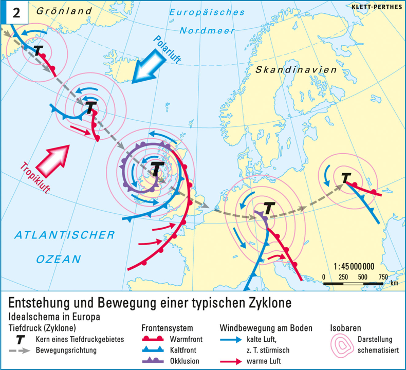

Geographie | Klasse 9/10

Eine Zyklone ist ein großräumiges Tiefdruckgebiet, das vor allem in den gemäßigten Breiten entsteht. Sie bildet sich dort, wo warme Luftmassen aus den Tropen und kalte Luftmassen aus den Polargebieten aufeinandertreffen. Besonders häufig geschieht dies im Bereich der Polarfront, zum Beispiel über dem Nordatlantik in der Nähe Islands.
Im Bereich Islands treffen zwei unterschiedliche Luftmassen aufeinander: Von Süden strömt warme Tropikluft nach Norden, während von Norden kalte Polarluft nach Süden gelangt.
Zwischen diesen beiden Luftmassen befindet sich eine Grenzfläche, die man als Polarfront bezeichnet. Zu Beginn verlaufen die Westwinde noch relativ gleichmäßig und ruhig. Man spricht deshalb von einer laminaren Strömung.
Durch den starken Temperaturgegensatz zwischen warmer Tropikluft und kalter Polarluft gerät die Grenzfläche zwischen den Luftmassen in Schwingungen. Die zuvor gleichmäßige Strömung beginnt zu mäandrieren, also wellenförmig zu verlaufen.
Dabei entsteht eine Wellenstörung. Die Winde werden unruhiger, und es bildet sich eine zunehmend turbulente Strömung.
An der Grenze zwischen warmer und kalter Luft sinkt der Luftdruck gegenüber der Umgebung. Dadurch entsteht ein kleines Tiefdruckgebiet. Dieses Tief ist der Ausgangspunkt für die weitere Entwicklung der Zyklone.
Im weiteren Verlauf verstärkt sich das Tiefdruckgebiet. Die Luft beginnt, um das Tief herum zu strömen. Auf der Vorderseite des Tiefs wird warme Luft nach Norden geführt. Auf der Rückseite des Tiefs strömt kalte Luft nach Süden.
Dadurch entstehen zwei wichtige Fronten:
Das Tiefdruckgebiet wird stärker, weil immer mehr Luftmassen in Bewegung geraten und der Temperaturgegensatz weiter Energie für die Entwicklung liefert.
Im Reifestadium hat sich das kleine Tiefdruckgebiet zu einem deutlich ausgeprägten Wirbel entwickelt. Dieser Wirbel wandert in der Regel nach Osten, weil er sich in der außertropischen Westwindzone befindet.
Die warme Luft dringt weiter nach Norden vor, während die kalte Luft weiter nach Süden strömt. Die Kaltfront holt die Warmfront langsam ein, da sie sich schneller bewegt.
Die kalte Luft schiebt sich unter die warme Luft. Die warme Luft wird dadurch angehoben und kühlt sich beim Aufsteigen ab. Dabei können Wolken und Niederschläge entstehen.
Zwischen Warmfront und Kaltfront befindet sich ein Bereich mit warmer Luft. Dieser Bereich wird als Warmsektor bezeichnet.
In dieser Phase findet bereits ein wichtiger Austausch statt: Warme Luft aus südlicheren Breiten wird nach Norden transportiert, während kalte Luft aus den Polargebieten nach Süden gelangt.
Da die Kaltfront schneller wandert als die Warmfront, erreicht sie diese schließlich. Die kalte Luft schiebt sich immer weiter unter die warme Luft und hebt sie fast vollständig vom Boden ab.
Wenn Kaltfront und Warmfront zusammentreffen, entsteht eine neue Front: die Okklusionsfront. Man sagt auch: Die Zyklone okkludiert.
Die angehobene Warmluft steigt weiter auf und kühlt sich dabei ab. Es bilden sich häufig dichte Wolken und Niederschläge. Am Boden nimmt der Temperaturgegensatz allmählich ab, weil die warme Luft nicht mehr direkt am Boden liegt.
Mit der Okklusion schwächt sich die Zyklone zunehmend ab. Der Austausch zwischen warmer Tropikluft und kalter Polarluft hat stattgefunden. Damit trägt die Zyklone zum globalen Temperaturausgleich in der Atmosphäre bei.